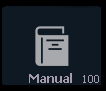

In the [About] display, tap on the {What's New} button to open the user documentation on the console. The documentation will open in Tab 100.
You can also open the documentation from the Display Management Home Screen by pressing the Manual icon.

Note: Only one instance of the documentation can be open at a time.
Note: For consoles running Windows XP or Macs running ETCnomad, the manual is not available for viewing. Please see ETC's website, etcconnect.com, to view the online manual or download a PDF version.